Compris entre Aude et Rébenty, le petit "plateau" n'a finalement cette appelation que de nom.
Pratiquement je dirais que le petit plateau de Sault, ce sont de chamants villages au milieu de leur petit plateau fertile respectif et séparés des autres par une montagne, un précipice ou un autre relief de terrain.
Ces villages m'ont toujours été familier car ma grand mère avait au moins un cousin dans chacun. Elle nous racontait ces fêtes de village où les martinlisois se rendaient en nombre.
Mon arrière grand-père est né à Bessède.
Félix Armand avant de devenir notre curé, avait été celui de Galinagues et donc un familier des chemins y menant.
J'ai déjà présenté certains villages à la limite de ce territoire qui peuvent être considérés comme en faisant partie : Artigues, Le Clat, Fontanès de Sault, Campagna-de-Sault et Cailla avec son hameau de Laprade
Dans cette page, j'ai regroupé quelques photos des autres villages : Aunat, Bessède-de-Sault, Galinagues, Mazuby, Rodome
Bonne visite
Le plateau d'Aunat vue depuis la place de la mairie
La mairie
Panneaux des balades depuis Aunat
Monument aux morts
Lavoir
Rues d'Aunat, en route vers l'église

Rues d'Aunat, un des abreuvoirs
Croix de fer en bas de l'église

L'église

Vue depuis l'église

Grille du cimetière entourant l'église

Vues depuis le cimetière

Au cimetière, les tombes Bézia - (je n'en avais pas trouvé à Bessède, je me rattrape)


L'église depuis le cimetière

Façade de l'église et vue depuis la serrure de la porte
Vue depuis l'avant de l'église
Un autre abreuvoir
Les vues panoramiques proposées par Silas, prises depuis l'église
Panneau d'entrée par la route de Rodome
IMG_20240325_161409Aunat vu depuis la route de Fontanes (2 points de vue différents)


Eglise Saint Barthélémy
Vue du village depuis l'église
Arrière de l'Eglise vue du cimetière
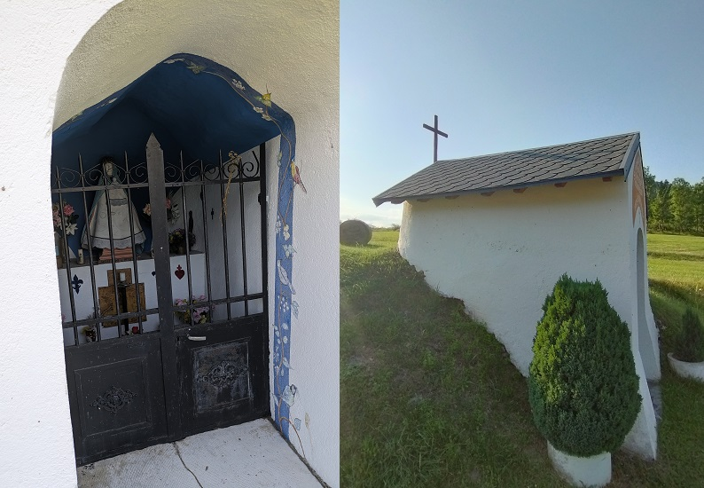 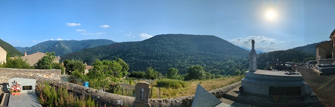
Le hameau de Gesse fait partie de la commune de Bessède

 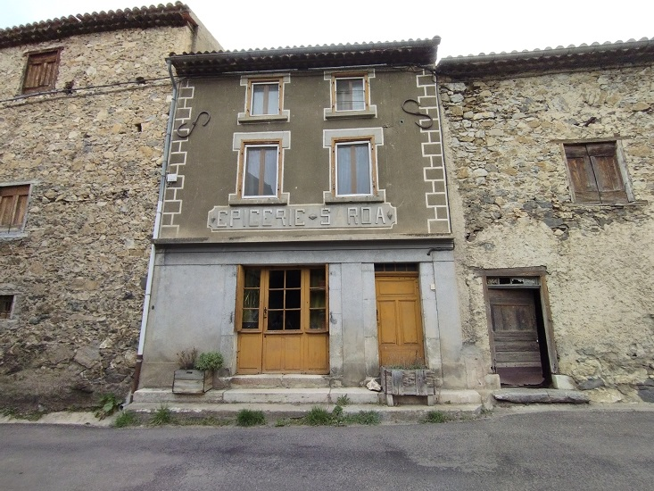
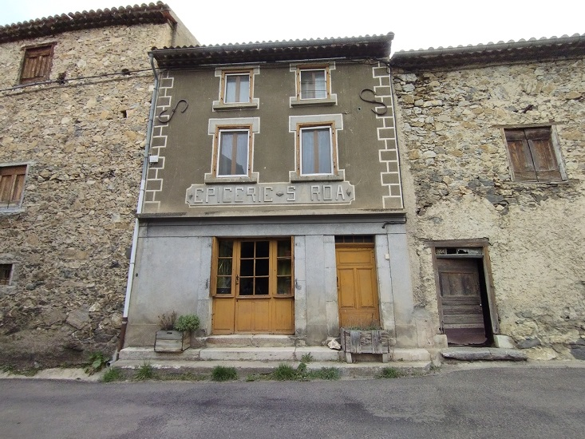
 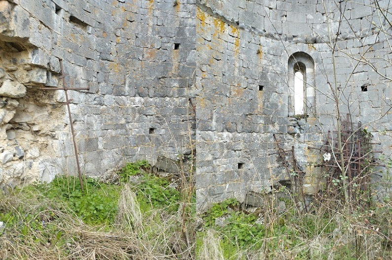
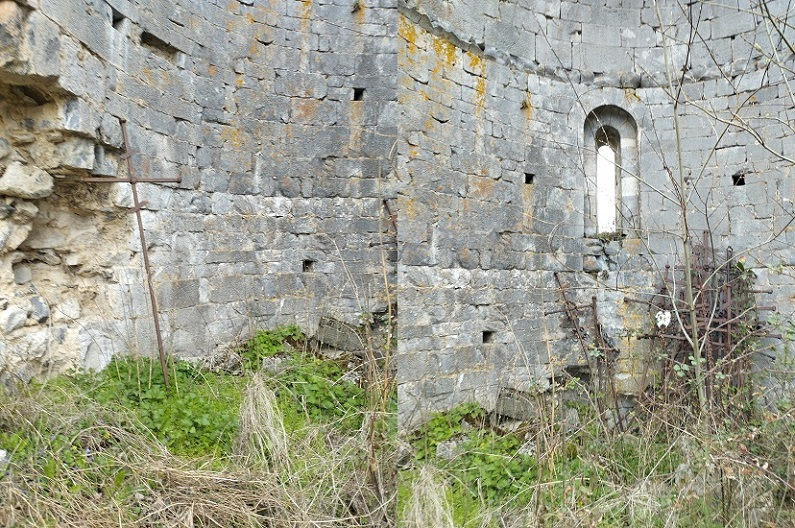
 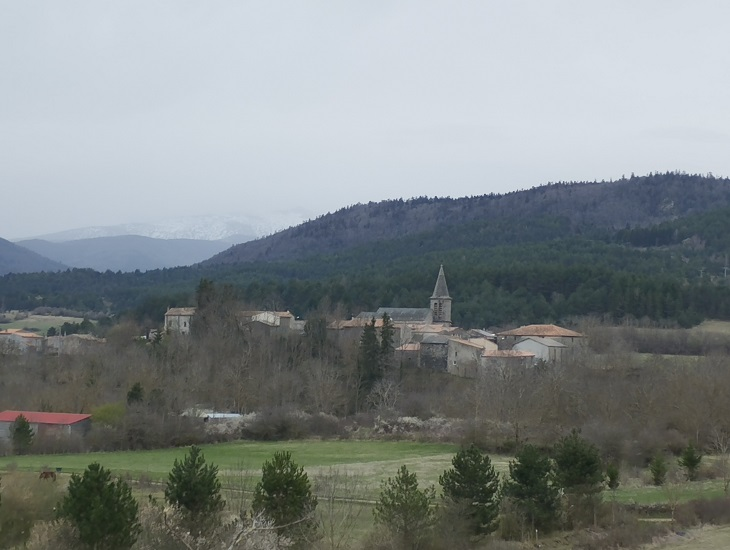
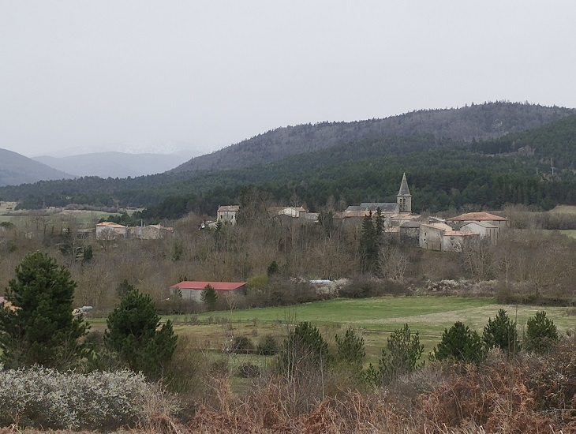
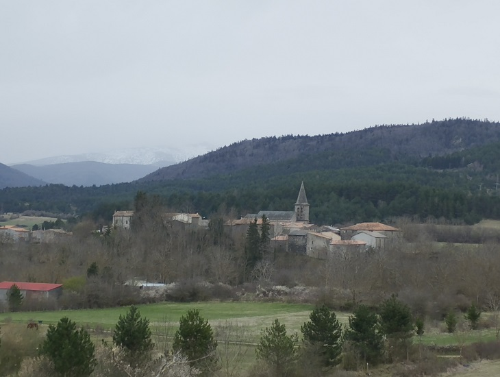
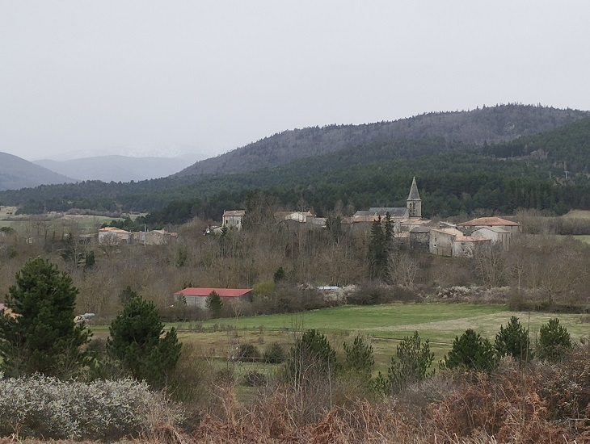
 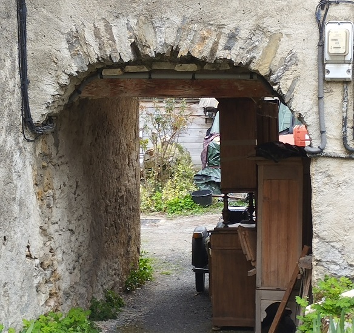
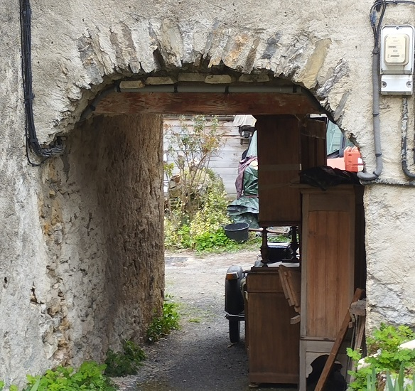
Espace jeux - maintenance à prévoir...
Ferme à l'angle du chemin Vauban - est ce l'ancienne église du village ?
Directions des fermes du boût du hameau
Le GR 7 / chemin Vauban passe à Caillens
Quelques pas sur le GR 7 / chemin Vauban - vue de Caillens et de ses environs
Voici un article de La Dépêche qui décrit bien cet habitat
 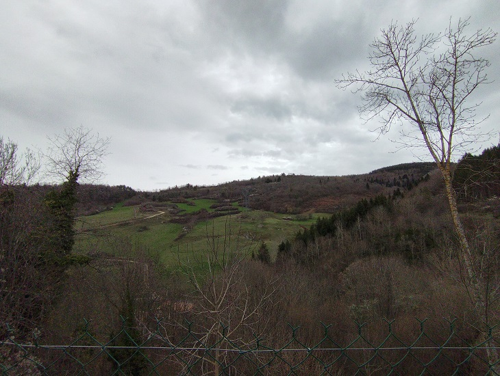
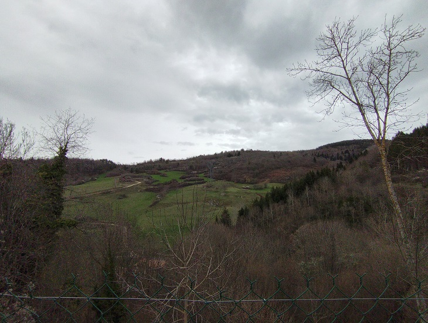